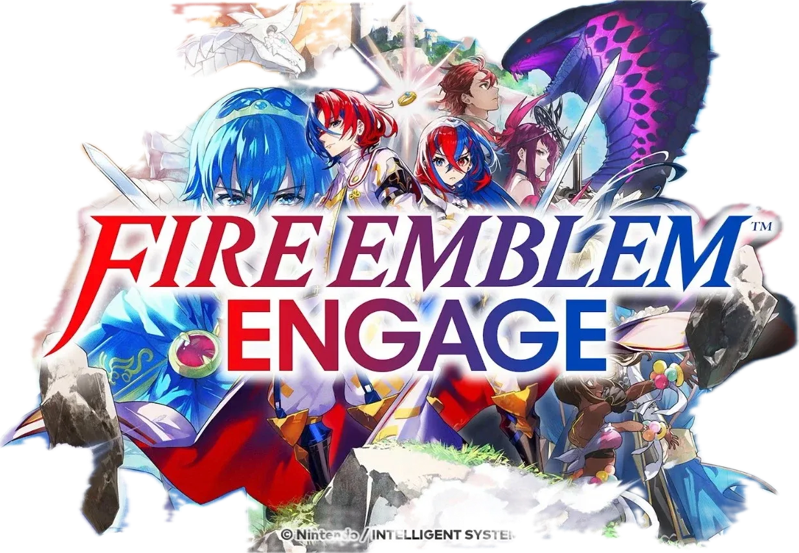

Sobre o jogo
-

Desenvolvimento
O Fire Emblem Engage foi anunciado pela primeira vez em 13 de setembro de 2022 durante um Nintendo Direct com um lançamento estimado em 20 de janeiro de 2023. É o primeiro Fire Emblem desenvolvido internamente pela Intelligent Systems para um console HD e foi criado no mecanismo de jogo Unity. Os designs dos personagens foram criados pela artista freelancer Mika Pikazo, cuja contribuição e influência forneceram a base para a estética do jogo. O jogo entrou em desenvolvimento ao mesmo tempo em que Fire Emblem: Three Houses ainda estava em desenvolvimento, e foi intencionalmente projetado para ser uma experiência diferente de Three Houses, contando uma história mais simples com um tom mais semelhante ao Fire Emblem Awakening.
O Engage apresenta personagens e outros conteúdos retirados de entradas anteriores da série. Enquanto títulos anteriores, como Fire Emblem Awakening, apresentam personagens retirados de títulos fora de seu mundo específico e cânone como DLC ou outro conteúdo bônus, Engage é a primeira entrada da série principal a apresentar diretamente personagens de todos os títulos principais anteriores na narrativa central desde o segundo jogo, Fire Emblem Gaiden. A premissa do jogo foi originalmente concebida como um meio de celebrar o trigésimo aniversário da franquia, mas os atrasos no desenvolvimento causados pela pandemia de COVID e outros fatores diminuíram a ideia de uma conexão direta de aniversário.
-
 História
História
Mil anos atrás, a terra de Elyos foi sitiada pelo Fell Dragon Sombron. Graças a um grupo de guerreiros poderosos que utilizam os poderes de heróis de outros mundos, Sombron foi selado. Elyos desfrutou de um milênio de paz, mas o selo que segura o Dragão Caído começou a enfraquecer.
Alear, um Dragão Divino, desperta de um sono de mil anos e se torna uma figura central no combate à ameaça iminente de forças que tentam libertar Sombron. Para atingir esse objetivo, Alear deve procurar os doze Anéis de Emblema, alguns dos quais são mantidos por forças leais ao Dragão Caído.
-
 Mundo
Mundo
O continente de Elyos é composto por duas massas de terra separadas. A massa de terra maior em forma de anel é dividida em quatro reinos, com Firene no quadrante sudoeste, Brodia no noroeste, Elusia no nordeste e Solm no sudeste. No centro deste anel há uma ilha que acasa de um quinto reino chamado Lythos.
Elyos tem uma conexão com os mundos dos títulos anteriores do Fire Emblem através de anéis especiais que representam os espíritos dos Lordes do Fire Emblem anteriores chamados Emblems.